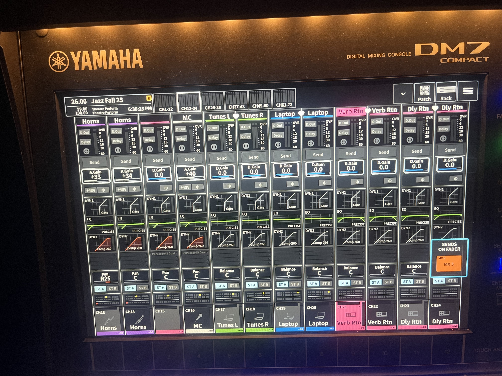
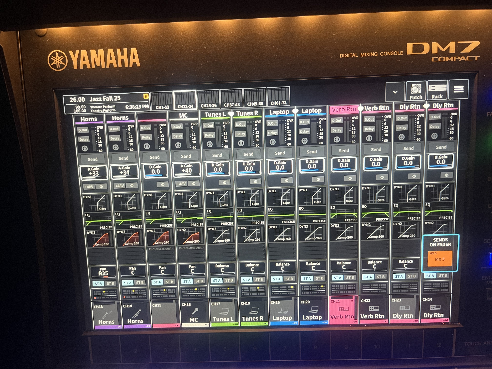

I went to assist the sound check for BC's fall jazz concert on November 17th; this was at the indoor theater at the performing arts building.
I got the chance to set up the stage's audio connections and to mix the audio for the house and monitor speakers;
I got to use a Yamaha DM7 Compact as the mixer for the event, and we had a total of 15 inputs going into it.
We had about three jazz ensembles that played throughout the sound check, which required audio setup to be somewhat adaptable
between bands. While every ensemble had an essential roster of musicians -a drummer, a guitarist, a bassist, a pianist, and 4 horns-
some bands would have slightly more musicians or they might need an extra mic available for a particular solo.
While our stage and channel setup had already been settled on what appears below, we also had the flexibility to
temporarily use certain mics for other instruments as needed.
 

Something I found interesting about this setup was that we had a second bass amp in our setup (as shown below).
The Markbass amp was routed to our main bass channel, and seeing that we had a Fender Rumble reserved for what could
only be the second guitar channel, I figured at first that maybe the Rumble was actually reserved for a second
electric guitar. Eventually, we did have one band that had two bassists, but even though only one played at a time,
I figured that in the event that two guitars or two basses were needed, the Rumble could accommodate to either scenario
(since you can plug an electric guitar into a bass amp, and guitars sound particularly good through a Rumble amp).
We did, however, need to use a Radial active DI box in the event that passive bass pickups would be used. We did have an
issue with the first band, since their electric bass actually had an active pickup; that signal was going
through the active DI, and since that DI was receiving phantom power from the mixer, we had to disable it for the active DI in order
for the original signal to go through. That got us by, but then there was one instance where one of the ensembles was using an
upright bass with a passive pickup. We just had to turn the phantom power back on to get our signal.

There were some considerable changes we had to account for in real time. As far as the house mix, the biggest thing we had
to tweak in real time was the vocal channel for one of the bands. After the second band started rehearsing, we noticed
that even with her channel at base level (-5 dB), the singer was still loud enough to potentially over-drive the house speakers a bit.
We ended up adding a compressor instance to the vocal channel and lowered the threshold a bit; I thought this was particularly
effective because the singer gave a very emotional performance, and while that would most likely have been harder to achieve
with a softer voice, that emotional timbre was still there after the compression-you could very much still feel her performance
even if her voice wasn't overpowering the house mix anymore. While that was a big mind-opener as to how to mix live vocals,
the more consistent challenge (at least for me) lied within mixing the rhythm section. Throughout all three bands, the drums and bass
were straightforward to mix since their presence was always a must. But for instruments like guitar and piano, I found that it was
easier for them to get lost in the mix whenever the horns played (which, for jazz, was like 90% of the time). Bringing up the guitar and
piano was easier during individual brass solos, but making them easier to hear did feel harder to do without bringing the horns
down too much. Maybe panning across the house speakers could have helped achieve that balance, but that wasn't something we hadn't
dabbled too much with at this stage in the class. Overall, I felt that because the horns and percussive instruments were already loud enough and the theater
was small enough to allow for enough sound dispersal, I settled on bringing the guitar, bass, piano, and vocals up more through the house mix.
I somewhat figured that this would at least compensate for the horns potentially overshadowing the other instruments; by making those
slightly louder through the house mix, it would at least be easier to hear them even if their sound came from above the brass sections.